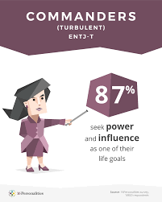

สุจิตรา ปานการะเกตุ
Sujittra Pankaraket
Business Analyst & UX/UI Designer who owns product delivery end-to-end. As the sole BA across multiple concurrent enterprise projects, I cover all three roles — Business Analyst, Tester, and UX/UI Designer — from requirements gathering and SDLC documentation (ISO 29110) to coordinating with developers, testing the system myself, and driving it through to go-live.
Business Analyst & UX/UI Designer with end-to-end product delivery ownership. As the sole BA across multiple concurrent enterprise projects, I cover three roles — Business Analyst, Tester, and UX/UI Designer — from requirements gathering and SDLC documentation (ISO 29110) to coordinating with developers, testing the system, and driving it through to go-live.
My main project is an agricultural commodity trading platform integrating SAP B1 and the UOB Payment Gateway, where I break work into module-level tasks, track timelines and dependencies, manage change requests and defects across SIT/UAT cycles, lead UAT with clients, and keep stakeholders aligned to deliver on schedule.
My main project is an agricultural commodity trading platform integrating SAP B1 and the UOB Payment Gateway. I break work into module-level tasks, track timelines and dependencies, manage change requests and defects across SIT/UAT cycles, lead UAT with clients, and keep stakeholders aligned to deliver on schedule.
I work best in fast-paced Agile/Scrum environments — proactive in unblocking the team, clear in communication, and driven by a strong ownership mindset.
I thrive in fast-paced Agile/Scrum environments — proactive in unblocking the team, clear in communication, and driven by a strong ownership mindset.
Sujittra Pankaraket
สุจิตรา ปานการะเกตุ

University
